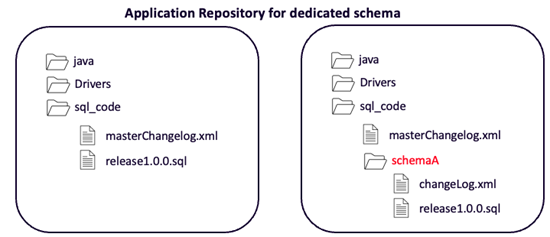
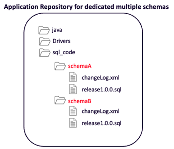
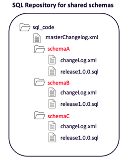

This document discusses use cases when there are multiple teams that deploy to the same database. We will discuss the following two use cases in this scenario:
This is a common use case for applications that integrate multiple subsystems. Multiple teams, each with their own Git repository, deploy database changes into their own dedicated schemas in the same database.
| Team | Schema |
|---|---|
| Team 1 | SchemaA |
| Team 2 | SchemaB |
| Team 3 | SchemaC |
| Team4 | SchemaD |
Each team will dedicate a directory in their repository for database changes. In this directory, they can manage all their scripts along with the changelog.xml file. The team can also create a directory for their schema.
In the case of a team deploying to multiple schemas, they could organize their repository where they have a subdirectory for each schema.
The team needs a master changelog file which can control the flow of all changes to all schemas.
See the section “Deploying with Liquibase” later in this document for sample scripts.
In this use case, multiple teams, each with their own Git repository, deploy database changes to one or more shared schemas. This use case is common for legacy applications that have added subsystems over time or other complex application architectures.
| Team | Schema |
|---|---|
| Team 1 |
SchemaA, SchemaB, SchemaC |
| Team 2 | |
| Team 3 | |
| Team4 |
It is important to understand that teams must communicate with each other about their database changes going into shared schemas. Database changes often have dependencies, and these changes need to be coordinated so that they are deployed in the correct order.
When multiple teams share common schemas, it is not possible to use each team’s own application repository. This use case requires setting up a dedicated SQL repository for shared schemas.
The team needs a master changelog file that can control the flow of all changes to all schemas.
See the section “Deploying with Liquibase” later in this document for sample scripts.
Here is a sample masterChangelog.xml file which can be used in a multi-schema repository:
The basic script for deploying with Liquibase using a single service account to deploy to multiple shared schemas looks like this:
The script for deploying with Liquibase using proxy users to deploy to one schema at a time looks like this. This is for the Oracle use case:
Liquibase automatically creates DATABASECHANGELOG and DATABASECHANGELOGLOCK tables (also called DBCL tables) for tracking deployments. These tables are created in the default schema for the user connecting to the database.
If you want your DBCL tables to be created in another schema, e.g., a dedicated schema for Liquibase tracking only, then you can use --liquibase-schema-name=<schema> to indicate your specific schema. You need to make sure that the service account allows creating DBCL tables in this schema, and allows querying these tables.
--liquibase-schema-name=<schema>
--default-schema-name=<schema>